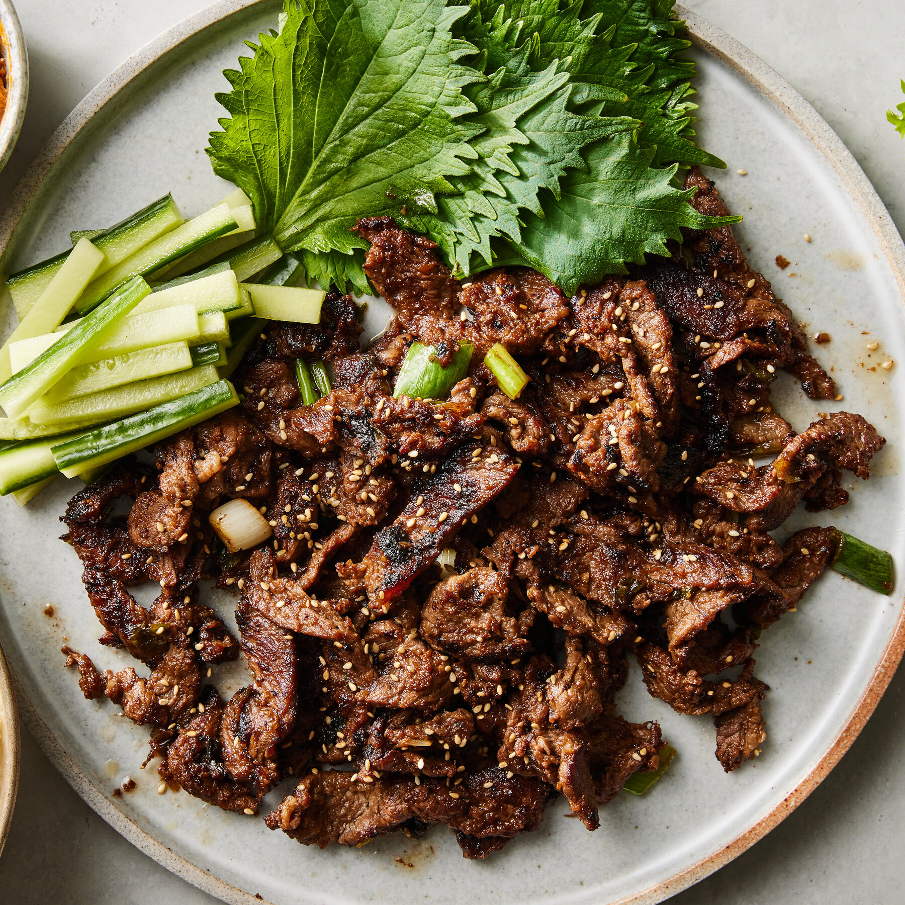

Bulgogi

What is Bulgogi?
Bulgogi, or Korean barbecue, literally means "fire meat." Thin slices of beef (or sometimes pork) are marinated in a sweet-savory sauce, then grilled to juicy and flavorful perfection.
Ingredients
- 1 pound flank steak
- 5 tablespoons soy Sauce
- 2 1/2 tablespoons white sugar
- 1/4 cup chopped green onion
- 2 tablespoons minced garlic
- 2 tablespoons sesame Seeds
- 2 tablespoons sesame Oil
- 1/2 teaspoon ground black pepper
Steps
- Gather all Ingredients
- Whisk soy sauce, green onion, sugar, garlic, sesame seeds, sesame oil, and pepper together in a bowl
- Place flank steak slices in a shallow dish. Pour marinade over top. Cover and refrigerate for at least 1 hour or overnight.
- Preheat an outdoor grill for high heat, and lightly oil the grate.
- Quickly grill flank steak slices on the preheated grill until slightly charred and cooked through, 1 to 2 minutes per side.
- Serve hot and enjoy!
Home